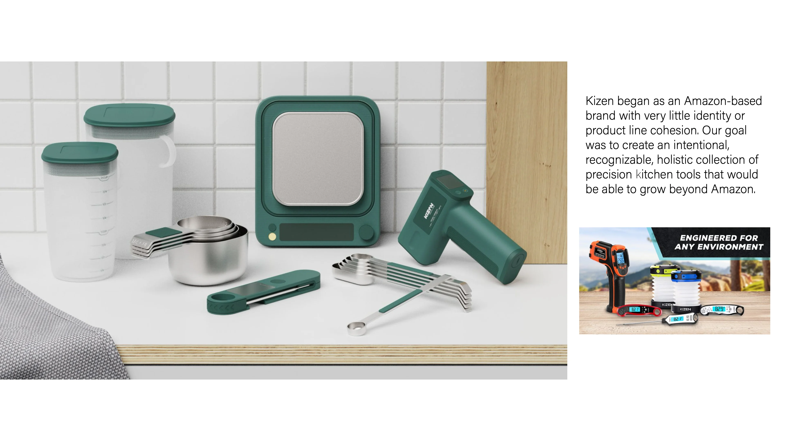

Kizen Brand group brand bolster and product design with Kyle Macdonald, Ethan Powell, Evelyn Choi, Mike Jacobs 
![Portfolio page: the Kizen collection in coral and green on a marble counter, with callouts. Probe Thermometer: features a swiveling probe that can be opened one-handed and is ambidextrous. Laser Thermometer: precision temperature reading at a distance in a form that doesn’t look like a power tool. Dual Scale: includes two separate weight mechanisms for heavy or precision weights based on how the cover is oriented. FlexPour: silicone liquid measuring cups that contain lids for storage and grip loops to support heavy contents. Dry Measuring Cups: stackable, magnetic measuring cups and spoons that can be used separately, stored together, and lay flat on a countertop.](../assets/img/kizen/page-6.webp)